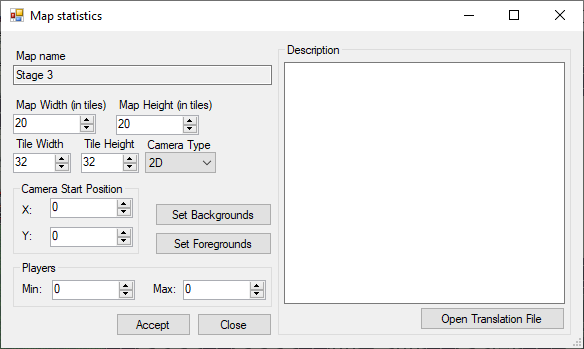

Map Statistics
Map Width/Height: How many tiles there is in the grid. When expending it will use the current selected tile to fill the new lines/columns.
Tile Width/Height: You can change the size of the tiles, keep in mind that most assets are made for 32 x 32 and will need to be updated.
Camera type: 2D or 3D. 3D maps require more work and will not be covered in this tutorial.
Camera Start Position: Set where the camera will be when the map start.
Players: Only used for the multiplayer. This is also not covered.
Description: Description of the map. Currently only used for the multiplayer.